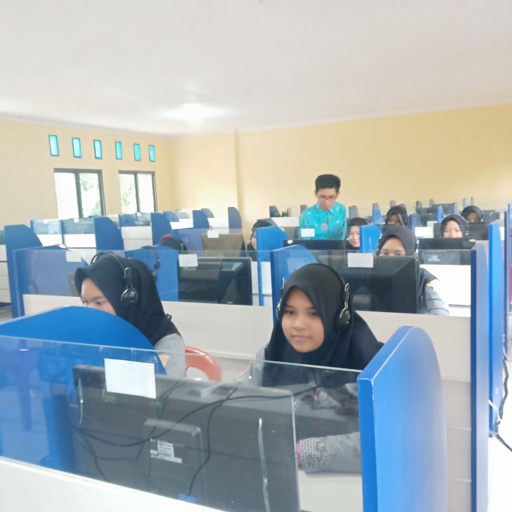

Jurusan & Program Studi
ATPH (Agribisnis Tanaman Pangan Horticultura)
Program studi ini mempersiapkan siswa untuk mengelola agribisnis tanaman pangan dan hortikultura dengan keterampilan pertanian modern.
TKJ (Teknik Komputer dan Jaringan)
Program studi ini mempersiapkan siswa untuk menjadi profesional di bidang teknologi informasi dan jaringan komputer.

Ak LK (Akuntansi dan Lembaga Keuangan)
Program studi ini mempersiapkan siswa untuk mengelola keuangan dan akuntansi dalam berbagai jenis lembaga keuangan.
TKRO (Teknik Kendaraan Ringan Otomotif)
Program studi ini memberikan keterampilan dalam perawatan dan perbaikan kendaraan ringan, baik mobil maupun motor.
TBSM (Teknik dan Bisnis Sepeda Motor)
Program studi ini memberikan keterampilan dalam perawatan, perbaikan, dan bisnis terkait sepeda motor.

BDPn (Bisnis Daring dan Pemasaran)
Program studi ini mempersiapkan siswa untuk berkarir di bidang bisnis online dan pemasaran digital.